Abstract
Autonomous agents often require accurate methods for detecting and localizing changes in their environment, particularly when observations are captured from unconstrained and inconsistent viewpoints. We propose a novel label-free, pose-agnostic scene change detection method that integrates information from multiple viewpoints to construct a change-aware 3D Gaussian Splatting (3DGS) representation of the scene. With as few as 5 images of the post-change scene, our approach can learn an additional change channel in a 3DGS and produce change masks that outperform single-view techniques. Our change-aware 3D scene representation additionally enables the generation of accurate change masks for unseen viewpoints. Experimental results demonstrate state-of-the-art performance in complex multi-object scenes, achieving a 1.7x and 1.6x improvement in Mean Intersection Over Union and F1 score respectively over other baselines. We also contribute a new real-world dataset to benchmark change detection in diverse challenging scenes in the presence of lighting variations.
 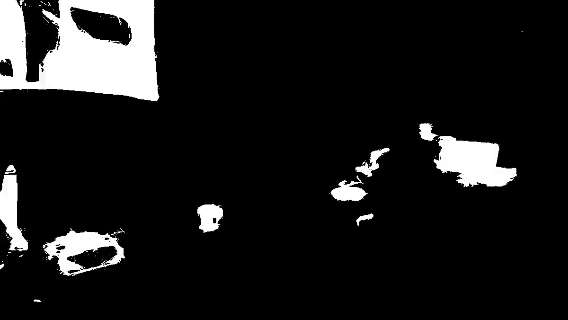
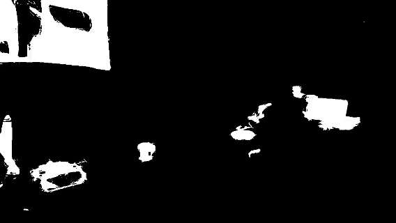

 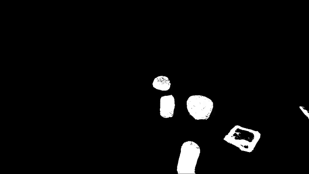
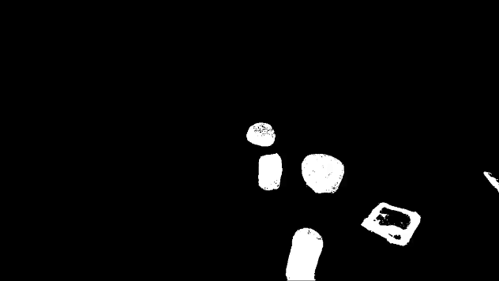

 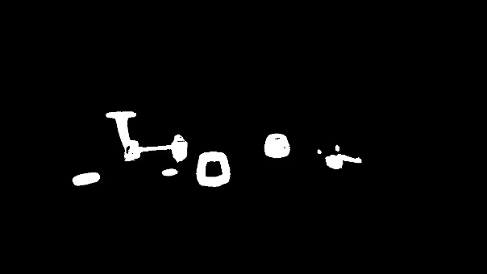
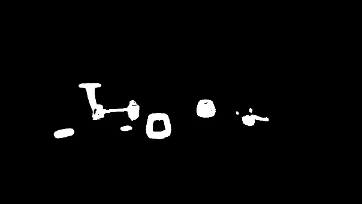

 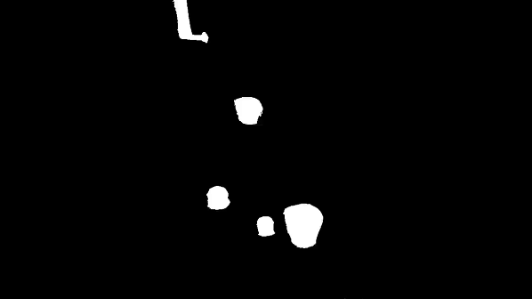
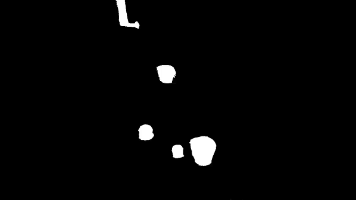

 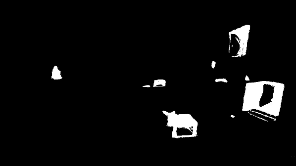
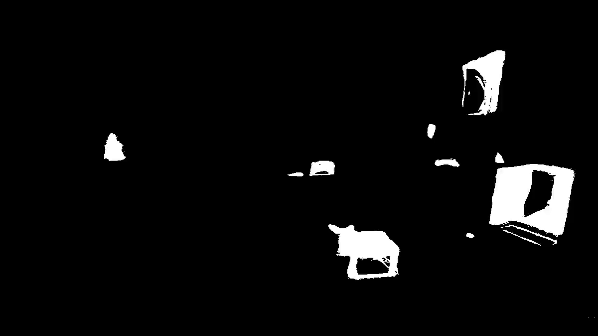

Images of the reference scene, inference scene, and the change masks are rendered from our "Change-Aware 3DGS" representation following a random trajectory which includes unseen viewpoints.
Overview

An overview of our proposed approach for multi-view pose-agnostic change detection. We leverage a 3DGS representation of the pre-change (reference) scene to build feature and structure-aware change masks given images of the post-change (inference) scene. We embed this information as additional change channels into the representation, which can be used to render multi-view change masks.
PASLCD Dataset
Porch
 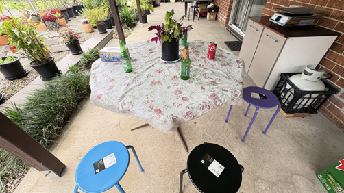
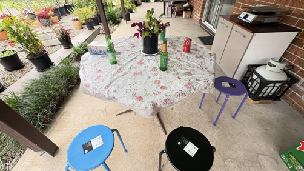
Pots


BibTeX
@inproceedings{galappaththige2025multi,
title={Multi-View Pose-Agnostic Change Localization with Zero Labels},
author={Galappaththige, Chamuditha Jayanga and Lai, Jason and Windrim, Lloyd and Dansereau, Donald and Sunderhauf, Niko and Miller, Dimity},
booktitle={Proceedings of the Computer Vision and Pattern Recognition Conference},
pages={11600--11610},
year={2025}
}Acknowledgement
This work was supported by the ARC Research Hub in Intelligent Robotic Systems for Real-Time Asset Management (IH210100030) and Abyss Solutions. C.J., N.S., and D.M. also acknowledge ongoing support from the QUT Centre for Robotics.